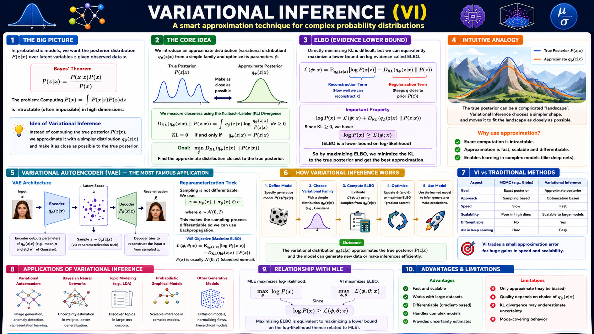

Variational Inference (VI) is a method to approximate intractable posterior distributions P(z|x) in probabilistic models. Instead of exact computation (often impossible in high dimensions), we choose a simpler family of distributions qφ(z|x) and optimize its parameters φ to make it as close as possible to the true posterior.
| Aspect | Variational Inference | MCMC (e.g., Gibbs) |
|---|---|---|
| Approach | Optimization | Sampling |
| Speed | Fast (scalable to large data) | Slow (many iterations) |
| Scalability | High (mini‑batches) | Poor in high dimensions |
| Differentiable | Yes (∇ ELBO) | No |
| Use in deep learning | Easy (VAEs, Bayesian NNs) | Hard |
Consider a latent variable model where posterior P(z|x) ∝ P(x|z)P(z). The denominator P(x)=∫ P(x|z)P(z)dz is often intractable. VI sidesteps this by approximating the posterior with a tractable q(z|x) (e.g., diagonal Gaussian) and optimising via ELBO.
Click each step to expand details.
Specify likelihood P(x|z) and prior P(z). Example: VAE with Gaussian latent variables.
Select qφ(z|x) (e.g., Gaussian with diagonal covariance). φ are learnable parameters (mean, variance).
ELBO = 𝔼q[log P(x|z)] - D_KL(qφ(z|x) ‖ P(z)). Maximising ELBO ≈ minimising KL to true posterior.
Write z = μφ(x) + σφ(x) · ε, ε ∼ N(0,I). This makes sampling differentiable → backpropagation.
Approximate posterior for inference, or sample from prior to generate new data (decoder). This is the core of VAE.
Interactive demo: The true posterior (target) is a mixture of two Gaussians (intractable to compute exactly). Choose a simple Gaussian q(z) (mean μ, log‑variance logσ²) to approximate it. Adjust the sliders to minimise the KL divergence. The ELBO increases as the fit improves.
KL divergence is always ≥ 0, zero only when q = p. By adjusting φ we find the best approximation within the chosen family. VI trades off exactness for speed and scalability.
Since log P(x) = ELBO + D_KL(q‖p) and KL ≥ 0, ELBO is a lower bound. Maximising ELBO simultaneously improves the model evidence and reduces the KL to the true posterior.
Encoder learns to map data to a structured latent space; Decoder learns to generate realistic samples. The KL term regularises the latent space to a prior (usually N(0,I)).

Top: Bayes’ theorem and the intractability of the marginal likelihood. Middle: Core idea – introduce q(z|x) and minimise KL. ELBO box: shows the decomposition log P(x) = ELBO + KL. Bottom: VAE architecture and reparameterisation trick. Use this graphic as your quick reference for understanding how VI powers modern generative AI.